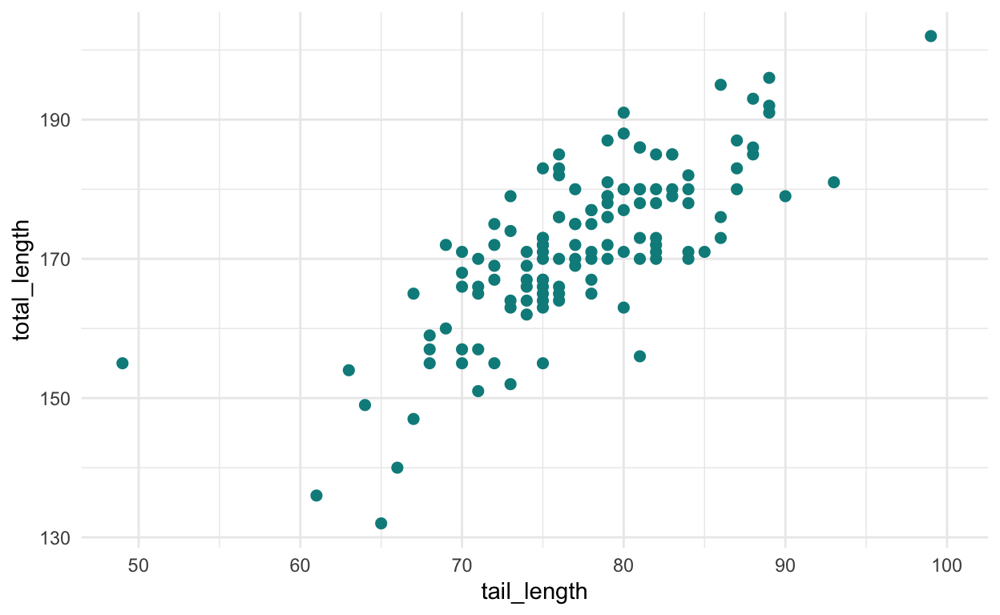
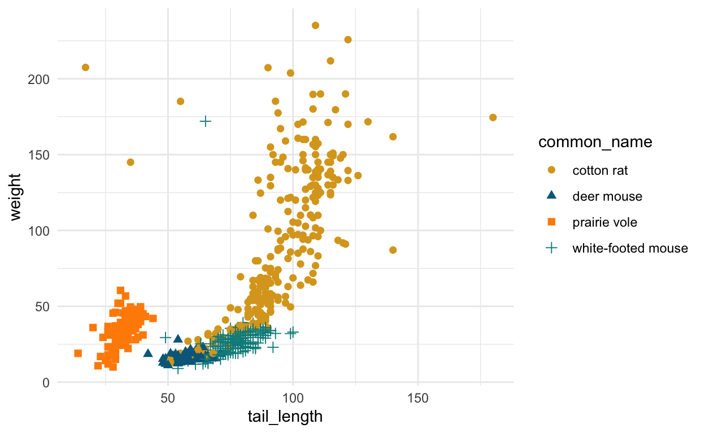
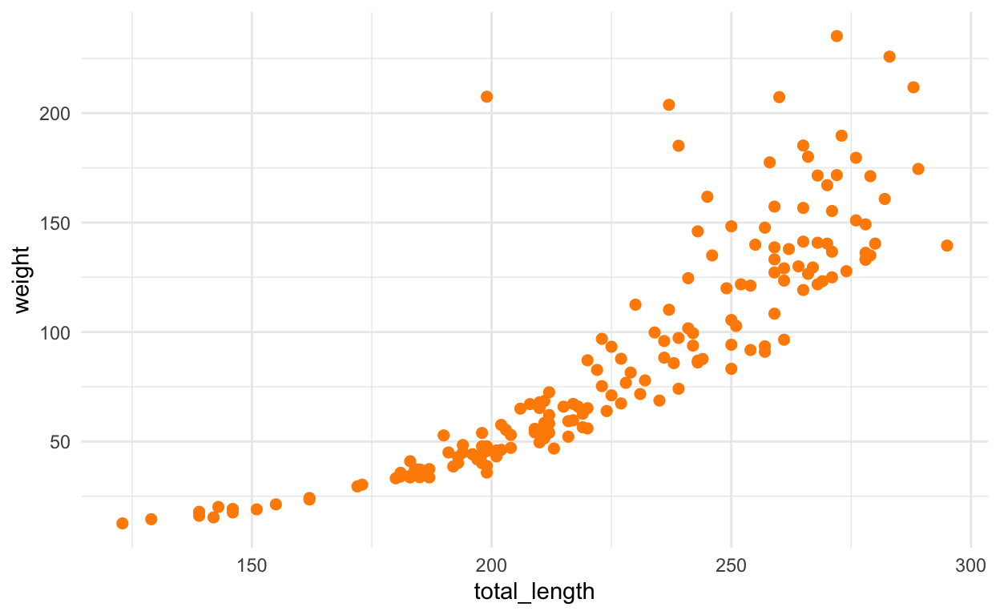

1. Wprowadzenie

Brakujące wartości, wskazywane przez (lub wymuszone) NA
w R, są powszechne w danych środowiskowych z powodu awarii
sprzętu, braku odpowiedzi na ankietę, błędu ludzkiego, ograniczeń
zasobów i dowolnej liczby innych nieprzewidzianych czkawek, które mogą
wystąpić podczas gromadzenia danych. Pomimo ich wszechobecności,
NA są rzadko brane pod uwagę w eksploracyjnej analizie
danych i są powszechnie „rozwiązywane” (czytaj: znikają) poprzez
usuwanie z listy. Usuwanie z listy (w którym każdy wiersz z
NA jest usuwany) może być najlepszą metodą
radzenia sobie z brakami, ale także pomija cenne istniejące obserwacje,
zmniejsza moc statystyczną i w zależności od mechanizmu braku może
zwiększyć błąd w szacunkach parametrów. Odkrywanie i krytyczne myślenie
o brakujących danych jest ważną i często pomijaną częścią eksploracyjnej
analizy danych, która może pomóc nam zrozumieć jakich
danych brakuje i dlaczego, abyśmy mogli wybrać
odpowiednią metodę ich obsługi.
Ale **jak eksplorować i wizualizować dane, które nie istnieją?
W tym samouczku wyjdziemy poza is.na(), aby poznać inne
przydatne narzędzia i podejścia do eksploracji i wizualizacji
brakujących wartości za pomocą pomocnych funkcji z pakietu naniar
autorstwa dr Nicka Tierneya.
**Tutaj używam „brakujących wartości” do opisania dowolnego
brakującego rekordu danych (NA), który może być dowolnego
typu (np. znak, data itp.) i nie oznacza tylko danych liczbowych.
Praca z tym tutorialem
W całym samouczku znajdziesz przykłady kodu, ćwiczenia kodowania i pytania dotyczące krytycznego myślenia. Przykłady kodu i ćwiczenia zakładają podstawową znajomość języka R, funkcji, argumentów i operatora potoku. Aby uruchomić kod w tym samouczku, nie trzeba mieć zainstalowanego R lub RStudio.
= Przykładowy kod
W całym samouczku szukaj ikony robota pomocniczego, aby zobaczyć przykłady kodu. Przykłady zawierają wstępnie napisany, działający kod, który można zbadać i uruchomić, naciskając pomarańczowy przycisk „Uruchom” w prawym górnym rogu.
Nie martw się - nie możesz zepsuć przykładowego kodu. Jeśli zaktualizujesz kod w którymkolwiek z przykładów i pojawi się komunikat o błędzie, po prostu naciśnij „Start Over” w lewym górnym rogu, a kod zostanie automatycznie zresetowany do domyślnego!

= Ćwiczenia z kodowania
Pomarańczowa ikona klawiatury wskazuje ćwiczenia kodowania, w których zostaniesz poproszony o ręczne wpisanie kodu w celu zbadania brakujących obserwacji w danych. Jeśli utkniesz, kliknij przycisk „Rozwiązanie” lub „Podpowiedź”!

= Pytania do przemyślenia
Ikona mózgu wskazuje pytania do przemyślenia i udzielenia odpowiedzi. W przypadku niektórych z nich nie ma dobrej lub złej odpowiedzi. Może być wiele poprawnych odpowiedzi. Wiele z pytań dotyczących myślenia odnosi się do przykładu kodowania lub ćwiczenia - w takich przypadkach należy uruchomić odpowiedni kod, aby zobaczyć dane wyjściowe potrzebne do udzielenia odpowiedzi na pytania.
**UWAGA:* *Istnieje wiele sposobów na zbadanie wartości
NA w R. Ten samouczek wprowadza funkcje
naniar, które uważam za naprawdę przydatne. Nie jest on
wyczerpujący.
OK, wszystko gotowe do rozpoczęcia tego samouczka! Kliknij poniżej, aby poznać dane, których będziemy używać w tym samouczku!
2. Poznaj dane

W tym samouczku zbadamy brakujące wartości w pomiarach wielkości gryzoni hojnie udostępnionych przez Andrew Hope’a i [Konza Prairie Long Term Ecological Research Program] (http://lter.konza.ksu.edu/konza-prairie-long-term-ecological-research-lter).
Ze strony internetowej Konza Prairie LTER [http://lter.konza.ksu.edu/konza-prairie-long-term-ecological-research-lter]: „Stacja Biologiczna Konza Prairie (KPBS) znajduje się na 3 487 hektarach rodzimej prerii wysokiej trawy, będącej wspólną własnością The Nature Conservancy i Kansas State University. KPBS znajduje się w Flint Hills w północno-wschodnim Kansas (39°05’ N, 96°35’ W), regionie użytków zielonych o stromych zboczach pokrytych płytkimi glebami wapiennymi nienadającymi się do uprawy”.
Stacja Biologiczna Konza Prairie znajduje się na tradycyjnej ziemi ludu Kaw (Kanza; natywnie „kką:ze”), od którego pochodzi nazwa tego miejsca i stanu Kansas. Kliknij tutaj, aby dowiedzieć się więcej o narodzie Kaw.
.](images/konza.jpg)
Konza Prairie LTER. Photo: Konza Prairie LTER Image Gallery.
Przegląd danych
Zastrzeżenie dotyczące danych: Ten samouczek działa z uproszczonym podzbiorem oryginalnych danych KP LTER i jest przeznaczony wyłącznie jako przykładowe dane do nauki narzędzi do eksploracji i uwzględniania brakujących wartości. Nie należy go używać do wyciągania wniosków na temat relacji, ponieważ ważne zmienne dotyczące lokalizacji, transektu, dyspozycji i innych są wykluczone. Więcej informacji można znaleźć w oryginalnych danych, metadanych i powiązanych publikacjach. Kliknij TUTAJ, aby uzyskać dostęp do oryginalnych danych i metadanych.
Cytowanie danych: Hope A. 2019. CSM08 Dane dotyczące pobierania próbek żywicieli-pasożytów małych ssaków dla 16 liniowych transektów pułapkowych zlokalizowanych w 8 zlewniach LTER w Konza Prairie. Environmental Data Initiative. https://doi.org/10.6073/pasta/69109c56fcf21a30a8d37369cb47f8de. Dostęp do zbioru danych 5/01/2020.
Podzbiór został uproszczony do 4 gatunków gryzoni i 9 zmiennych (więcej szczegółów i metod zbierania danych można znaleźć w metadanych pod linkiem do cytatu powyżej).
Gatunki:
Nasz podzbiór zawiera cztery najczęściej obserwowane gatunki gryzoni w badaniu: szczur bawełniany (n = 380), mysz białonoga (n = 313), mysz jelenia (n = 151) i nornica preriowa (n = 127). Wszystkie są bardzo urocze.

Zmienne:
date: data pomiarucommon_name: nazwa zwyczajowa gatunkutotal_length: całkowita długość od „czubka nosa do czubka ogona” (milimetry)tail_length: długość od nasady do końca ogona (milimetry)hf_length: długość tylnej łapy „od pięty do końca najdłuższego paznokcia na lewej tylnej łapie” (milimetry)ear_length: długość ucha „od nacięcia ucha do najdalszej krawędzi małżowiny usznej” (milimetry)weight: masa całego ciała (gramy)sex: płeć (m/k)age: deskryptor wieku („a” = dorosły, „juv” = młodociany, „sa” = młody dorosły)
Struktura danych
Nasza tabela danych (powszechnie nazywana tablicą lub ramką danych w R) jest wstępnie zaimportowana i już w uporządkowanym formacie, co oznacza, że jest prostokątna:
- każda zmienna jest kolumną
- Każda obserwacja to wiersz
Oto rzut oka na 10 wierszy z danych (z 971 wszystkich obserwacji):
| date | common_name | total_length | tail_length | hf_length | ear_length | weight | sex | age |
|---|---|---|---|---|---|---|---|---|
| 2016-07-21 | prairie vole | 145 | 33 | 21 | 13 | 37.5 | m | a |
| 2016-07-21 | prairie vole | NA | NA | NA | NA | NA | f | a |
| 2016-07-21 | prairie vole | 140 | 34 | 19 | 10 | 41.0 | m | a |
| 2016-07-21 | white-footed mouse | NA | 78 | 23 | NA | 33.0 | m | a |
| 2016-07-21 | white-footed mouse | NA | NA | NA | NA | NA | NA | NA |
| 2016-07-21 | white-footed mouse | NA | NA | NA | NA | NA | NA | NA |
| 2016-07-21 | white-footed mouse | 165 | 75 | 22 | 16 | 25.0 | m | a |
| 2016-07-21 | deer mouse | NA | 59 | 20 | 14 | 14.0 | m | a |
| 2016-07-21 | deer mouse | NA | 62 | 18 | 14 | 17.5 | m | a |
| 2016-07-21 | deer mouse | NA | 57 | 18 | 14 | 13.5 | f | a |
Oto widzimy, że w naszych danych występują brakujące wartości
(NA). Dobrze, bo w przeciwnym razie byłby to całkiem
bezużyteczny samouczek.
Ważne jest, abyśmy zbadali częstotliwość i strukturę brakujących
wartości w naszych danych, ale jak zbadać to, czego tam nie
ma? Dobrym miejscem jest policzenie NA, według
zmiennej i grupy.
Idź w kierunku szafy, przejdź do następnej sekcji, aby wprowadzić
naniar!

3. Początkowa liczba i proporcje NA

Najpierw użyjemy kilku funkcji naniar, aby uzyskać
podstawowe zliczenia wartości NA według zmiennych i grup w
naszej ramce danych. Pakiet naniar
został stworzony przez dr Nicka
Tierneya, aby pomóc nam odkrywać i analizować NA.
Oto zabawne wyjaśnienie nazwy pakietu od dr Tierneya: „Cóż, myślę, że warto myśleć o brakujących wartościach w danych jako o innym wymiarze, być może jak Narnia - inny świat, ukryty. Bliski, ale bardzo odmienny. Tak więc nazwa „naniar” jest grą na książkach „Narnia”, np. naniar: Ostatnia Bitwa (…z brakującymi danymi). Ponadto, NAniar, naniar = na w r, a jeśli chcesz, naniar może brzmieć jak „noneoya” z akcentem nz/aussie.”
Czego dowiemy się w tej sekcji
W naszych pierwszych krokach w naniar, użyjemy kilku
funkcji, aby uzyskać szybkie zliczenia i proporcje NA w
ramce danych lub kolumnie:
n_miss(): Zwraca liczbęNAw ramce danych lub kolumnie.n_complete(): Zwraca liczbę pełnych wartościprop_miss()ipct_miss(): Proporcja lub procent wartości, które sąNA.miss_var_summary(): Tabela podsumowująca liczbyNAw tabeli.miss_case_table(): Tabela podsumowującaNAwedług przypadku (obserwacji)
n_miss() dla zliczeń `NA
Użyj n_miss(),
aby zwrócić całkowitą liczbę NA dla całej ramki danych lub
dla określonej zmiennej (kolumny). Używamy $ do określenia
pojedynczej kolumny.
**Nasza ramka danych jest wstępnie zaimportowana i przechowywana jako
obiekt kp_rodents (dla gryzoni Konza Prairie).
Uruchom poniższe przykłady, a następnie wypróbuj ćwiczenia, aby
znaleźć liczbę NA dla ramki danych
kp_rodents!
Przykład 3.1
Zwróć całkowitą liczbę NA dla całej ramki danych
kp_rodents. Naciśnij „Run”, aby zobaczyć wynik!
n_miss(kp_rodents)Przykład 3.2
Zwróć całkowitą liczbę NA tylko dla kolumny
weight.
n_miss(kp_rodents$weight)Ćwiczenie z kodem: n_miss( )
Twoja kolej! W pustym fragmencie kodu poniżej napisz kod, który
zwróci całkowitą liczbę NA w kolumnie wiek w
kp_rodents. Zauważ, że możesz zobaczyć rozwiązanie (ale
upewnij się, że najpierw spróbujesz zakodować je ręcznie!).
n_miss(kp_rodents$age)n_complete( ) zwraca liczbę kompletnych wartości
Uzupełnieniem funkcji n_miss() jest
n_complete, która zwraca liczbę wartości innych niż
NA w ramce danych lub zmiennej.
Przykład 3.3
Zwróć liczbę pełnych (innych niż NA) wartości w zmiennej
hf_length:
n_complete(kp_rodents$hf_length)prop_miss( ) zwraca proporcję wartości, które są NA
Często proporcja brakujących wartości w ramce danych lub
kolumnie jest tak samo (lub bardziej) ważna niż rzeczywiste zliczenia.
Użyj funkcji prop_miss(),
aby szybko dowiedzieć się, jaka część wartości w ramce danych lub
kolumnie to NA.
Przykład 3.4
Znajdź proporcję wartości NA dla całej ramki danych
kp_rodents.
prop_miss(kp_rodents)Tak więc 25.6% wszystkich komórek w kp_rodents zawiera
NA.
Ćwiczenie z kodem: prop_miss( )
Jaka część wartości w kolumnie ear_length w
kp_rodents to NA?
Wskazówka: Użyj „$”, aby odnieść się do pojedynczej kolumny z ramki danych.
miss_var_summary( ) dla tabeli podsumowującej zliczenia i procenty NA
Poprzednie funkcje, których używaliśmy do uzyskania brakujących
liczb, zwracały pojedynczą wartość dla liczby NA. Byłoby to
jednak żmudne do wykonania indywidualnie dla każdej zmiennej, zwłaszcza
w przypadku dużej ramki danych.
Funkcja miss_var_summary()
w naniar zwraca ładną tabelę podsumowującą zawierającą
liczbę brakujących NA i procent dla każdej zmiennej i
sortuje je od największej do najmniejszej brakującej wartości.
Wypróbujmy to.
Przykład 3.5
Użyj funkcji miss_var_summary(), aby utworzyć tabelę
podsumowującą braki dla wszystkich zmiennych.
miss_var_summary(kp_rodents)Kolejną naprawdę fajną rzeczą w funkcji
miss_var_summary() jest to, że działa ona również z danymi
pogrupowanymi. Na przykład, co by było, gdybyśmy chcieli podzielić
raport brakujących danych nie tylko według zmiennej, ale także według
gatunku gryzonia. Aby to zrobić, możemy użyć
dplyr::group_by(), aby wskazać, że chcemy pogrupować według
różnych poziomów w zmiennej common_name, a
następnie pipe do miss_var_summary().
Przykład 3.6
kp_rodents %>%
group_by(common_name) %>%
miss_var_summary()Widzimy, że teraz brak jest raportowany według gatunku i zmiennej! Można jednak grupować według dowolnej zmiennej.
Ćwiczenie: miss_var_summary( ) z pogrupowanymi danymi
Napisz kod, który podsumuje brakujące liczby i wartości procentowe w
kp_rodents dla wszystkich zmiennych, pogrupowanych według
age.
kp_rodents %>%
group_by(age) %>%
miss_var_summary()miss_case_table( ) zwraca tabelę podsumowującą brakujące wartości według wiersza
Warto wiedzieć, ile istnieje kompletnych przypadków (wierszy z 0
brakującymi wartościami), a także ile obserwacji (wierszy) ma różne
liczby NA. Funkcja miss_case_table tworzy to
dla nas.
Przykład 3.7
kp_rodents %>%
miss_case_table()W tabeli podsumowującej widzimy, że liczba braków na obserwację (wiersz) waha się od 0 do 7. Spośród 971 obserwacji 408 jest kompletnych (bez brakujących wartości) - to 42,0% obserwacji w danych. 91 obserwacji zawiera dokładnie 7 brakujących wartości (9,4% obserwacji).
Teraz mamy kilka szybkich sposobów na uzyskanie liczby i proporcji
wartości NA w naszych danych. Bardzo pomocne może być
również spojrzenie na braki. Przejdź nieco dalej do
naniar, aby wizualizować braki w następnej sekcji!
4. Wizualizacja NA

Wizualizacja danych jest kluczową częścią eksploracyjnej analizy
danych i powinna obejmować wizualną eksplorację brakujących wartości.
Może nie wydawać się intuicyjne, w jaki sposób możemy wizualizować dane,
które nie istnieją. W tej sekcji poznamy dwa sposoby
wizualizacji wartości NA przy użyciu funkcji w
naniar:
vis_miss(): Wizualizacja lokalizacjiNAjako obiektu ggplotgg_miss_fct(): Tworzy mapę cieplną liczbyNAwedług grupy
vis_miss( ) do wizualizacji brakujących wartości
Funkcja vis_miss() w naniar jest przydatna
do uzyskania ogólnego widoku gdzie i jak często
NA występuje w naszej ramce danych. Tworzy ona binarną mapę
cieplną, ze wszystkimi lokalizacjami NA w kolorze <span
style=„color: black; font-weight: bold;”>czarnym i wszystkimi
wartościami bez braku w kolorze <span style=„color: gray;
font-weight: bold;”>szarym.
Uruchom poniższy przykładowy kod, aby zobaczyć wynik
vis_miss() dla naszej ramki danych
kp_rodents.
Przykład 4.1
vis_miss(kp_rodents)Co pokazuje powyższa wizualizacja?
- Oś pozioma: zmienne (kolumny) w naszej ramce danych, z %
NAdla każdej kolumny. - Oś pionowa: pozycja wiersza w naszej ramce danych (wiersz 1 znajduje się na górze, wiersz 971 na dole).
- Czarne kafelki (tutaj wyglądają jak linie): każda wartość
(„komórka”) w naszej ramce danych, która jest
NA. - Szare kafelki: każda wartość w naszej ramce danych, która NIE jest
NA. - Wartości procentowe w dolnej legendzie to brakujące i niewystępujące % dla całej ramki danych.
OK, więc tak wygląda każdy element. **W jaki sposób jest to przydatne?
Rozważmy nasze dane. Obserwacje gryzoni są ułożone chronologicznie. Tak więc najwcześniejsze obserwacje (2016-07-12) znajdują się na górze, a najnowsze (2018-08-03) na dole. Wygląda na to, że istnieją pewne przedziały czasowe, w których przypadki są kompletne (wyglądają jak szare paski we wszystkich zmiennych), z rozproszonymi okresami, w których dane były gromadzone dla mniejszej liczby zmiennych (więcej czarnych pasków w różnych zmiennych). To nie wygląda tak, jakby braki w obserwacjach były losowo rozłożone chronologicznie. Co powinno skłonić nas do zadania pytania: *Dlaczego nie?
Krytyczne myślenie
Zastanów się nad kilkoma potencjalnymi wyjaśnieniami nielosowego czasowego rozkładu brakujących obserwacji w naszym podzbiorze danych gryzoni z Konza Prairie. Niektóre rzeczy, które można rozważyć: różni badacze, zmiany w protokołach, zabiegi lub zmienne wykluczone z tych danych, sezonowość itp.
**Zastanów się teraz nad własnymi badaniami lub zestawami danych. W jaki sposób ten rodzaj wizualizacji może pomóc ci odkryć i zrozumieć brak w twojej własnej pracy?
Dodaj argumenty cluster = TRUE lub
sort_miss = TRUE
Domyślną funkcją funkcji vis_miss(), jak widzieliśmy w
powyższym przykładzie, jest ujawnianie brakujących obserwacji w
kolejności, w jakiej występują w ramce danych. Zamiast tego możemy
chcieć grupować lub sortować brakujące obserwacje.
Z dokumentacji vis_miss():
cluster = TRUEużyje „hierarchicznego grupowania, aby uporządkować wiersze według brakujących”.sort_miss = TRUE„układa kolumny w kolejności brakujących”
Ćwiczenie z kodem
Użyj funkcji vis_miss(), aby zwizualizować braki w
kp_rodents, uporządkowane według zmiennej od największej do
najmniejszej liczby braków.
sort = TRUEvis_miss(kp_rodents, sort = TRUE)gg_miss_fct( ): Heatmapa % braków według zmiennej i poziomu grupy
Możemy również chcieć zwizualizować częstość występowania
NA według grupy, dla różnych zmiennych. Funkcja
gg_miss_fct() w naniar robi to po wyjęciu z
pudełka, tworząc mapę cieplną % braków!
Zobacz przykład 4.2 poniżej, a następnie wykonaj ćwiczenia, aby stworzyć własną.
Przykład 4.2
Użyj funkcji gg_miss_fct(), aby utworzyć mapę cieplną %
braków we wszystkich 9 zmiennych, podzielonych na grupy według różnych
poziomów zmiennej age (a = dorosły,
juv = nieletni, sa = młody
dorosły).
gg_miss_fct(kp_rodents, fct = age)Super! Czego możemy się z tego dowiedzieć?
Widzimy, że pozostałe 8 zmiennych znajduje się na osi y, a cztery
poziomy naszej wybranej zmiennej (wiek) znajdują się na osi x: trzy dla
każdego z naszych zarejestrowanych opisów wieku (a,
juv, sa) oraz kolumna dla każdego
wieku zarejestrowanego jako NA.
Kolory kafelków wskazują procent wartości NA dla każdego
przecięcia, przy czym najciemniejszy fioletowy oznacza 0% braku, a
jasnożółty 100% braku.
Krytyczne myślenie
Rozważ powyższą mapę cieplną % brakujących danych, aby odpowiedzieć na poniższe pytania:
- Ogólnie rzecz biorąc, które dwie zmienne mają najwyższy % brakujących wartości we wszystkich grupach wiekowych gryzoni?
- Czy gryzonie dorosłe, młode czy młode dorosłe mają najwyższy % brakujących wartości dla długości ucha?
- Co oznaczają wszystkie żółte słupki w kolumnie
NAdla tych danych?
Wypróbuj teraz przykład, w którym tworzysz mapę cieplną dla % braków
przy użyciu innej zmiennej: common_name.
Ćwiczenie z kodem
Użyj gg_miss_fct(), aby utworzyć mapę cieplną % braków w
kp_rodents według zmiennej, pogrupowanej według gatunku
(common_name).
gg_miss_fct(kp_rodents, fct = common_name)Krytyczne myślenie
Rozważ heatmapę z powyższego ćwiczenia z kodem, aby odpowiedzieć na poniższe pytania:
- Który z czterech gatunków gryzoni miał najniższy % braków we wszystkich zmiennych?
- Których dwóch zmiennych brakuje najczęściej wśród wszystkich gatunków gryzoni?
Teraz masz kilka opcji wstępnej wizualizacji NA przy
użyciu vis_miss() i gg_miss_fct(). Przejdź do
następnej sekcji, aby odkryć, jak NA przecinają się między
zmiennymi i grupami!
5. Zbadaj przekroje NA
Oprócz liczby i procentu „NA” według grupy i zmiennej, powinniśmy
również zbadać, jak często współwystępują one między zmiennymi. Na
przykład możemy zapytać: “W ilu obserwacjach brakowało tylko
zmiennych total_length, tail_length i
ear_length?”.
W tej sekcji użyjemy wykresów UpSet do zbadania przecięć
NA między zmiennymi.
Wykresy UpSet z funkcją gg_miss_upset()
Możemy użyć UpSet plot do wizualizacji przecięć
NA (tj. nakładania się NA lub
współwystępowania) między zmiennymi.
Wykres UpSet, pomimo swojej nazwy, stanowi wspaniałą alternatywę dla
diagramu Venna, który jest znacznie bardziej przejrzysty dla zliczeń i
dużej liczby zmiennych. Najłatwiej jest wyjaśnić wykres UpSet, gdy
faktycznie na niego patrzymy, więc uruchom poniższy kod dla ćwiczenia
5.1, który wykorzystuje funkcję gg_miss_upset() w
naniar, aby utworzyć wykres UpSet współwystępowania
NA.
Przykład 5.1
Utwórz wykres UpSet dla współwystępowania NA w ramce
danych kp_rodents.
*Uwaga: poniższy argument nsets = 7 zwiększa liczbę
uwzględnionych zmiennych do 7 (domyślnie jest to 5), co odpowiada naszej
liczbie zmiennych zawierających NA (przypomnijmy, że
zaczęliśmy od 9 zmiennych, ale zarówno date, jak i common_name są w 100%
kompletne).
gg_miss_upset(kp_rodents,
nsets = 7)Postaraj się nie panikować. Tak, to dużo. Rozłóżmy to na czynniki pierwsze.
Najpierw ogólne podsumowanie naszej fabuły UpSet:
- Poziome czarne paski w lewym dolnym rogu wskazują liczbę
NAogółem dla każdej zmiennej, z nazwą zmiennej pokazaną po prawej stronie odpowiedniego poziomego paska - Pionowe czarne linie z czarnymi kropkami wskazują *zmienne, między
którymi częstotliwość współwystępowania
NAjest wskazywana przez pionowe czarne paski.
Wciąż dużo. Oto przykład, w który warto się zagłębić:
Rozważmy czwartą pionową czarną kolumnę (częstotliwość = 54).
Widzimy, że poniżej niej kropki obok 4 zmiennych
(tail_length_NA, hf_length_NA,
ear_length_NA i total_length_NA) są
wypełnione. Wysokość słupka wynosząca 54 oznacza, że w naszej ramce
danych znajdują się 54 obserwacje (wiersze), w których dokładnie
te cztery zmienne mają wartość NA.
Krytyczne myślenie
Odpowiedz na poniższe pytania na podstawie wykresu UpSet utworzonego w przykładzie 5.1:
- W ilu obserwacjach (wierszach)
kp_rodentsbrakuje tylkoweight,ear_lengthitotal_length? - W ilu obserwacjach brakuje tylko
total_length?
gg_miss_upset() zapewnia dość niskokodowy sposób
znajdowania przecięć NA między zmiennymi!
*Przejdź do następnej sekcji, aby zbadać relacje między
NA a wartościami innej zmiennej!
6. Zależności między NA a innymi NA
Do tej pory zbadaliśmy brakujące liczby, proporcje i przecięcia, ale
nie mamy jasnego poczucia, w jaki sposób NA w jednej
zmiennej może być rozłożone na wartości innej
zmiennej.
W tej sekcji zbadamy tylko nasze obserwacje dla myszy białonogiej. Są one przechowywane jako obiekt wf_mouse. Pierwsze 5 wierszy podzbioru myszy białonogiej (n = 313) pokazano poniżej:
| date | common_name | total_length | tail_length | hf_length | ear_length | weight | sex | age |
|---|---|---|---|---|---|---|---|---|
| 2016-07-12 | white-footed mouse | 176 | 76 | 17 | 73 | 31.8 | m | a |
| 2016-07-12 | white-footed mouse | 169 | 77 | 17 | 22 | 27.6 | f | a |
| 2016-07-12 | white-footed mouse | 166 | 75 | 18 | 23 | 23.5 | f | a |
| 2016-07-12 | white-footed mouse | 177 | 78 | 17 | 22 | 27.8 | m | a |
| 2016-07-12 | white-footed mouse | 172 | 82 | 17 | 22 | 22.6 | f | a |
Poniższy kod tworzy wykres ggplot długości ogona myszy białej w stosunku do całkowitej długości ogona. Powinieneś również zauważyć komunikat ostrzegawczy zwrócony nad wykresem: „## Warning: Usunięto 182 wiersze zawierające brakujące wartości (geom_point).”
ggplot(data = wf_mouse, aes(x = tail_length, y = total_length)) +
geom_point(size = 2, color = "cyan4") +
theme_minimal()## Warning: Removed 182 rows containing missing values or values outside the scale range
## (`geom_point()`).
Ten komunikat ostrzegawczy daje nam wskazówkę na temat tego, czego
brakuje na tym wykresie: z 313 obserwacji myszy o białych stopach, 182 z
nich mają wartości NA dla total_length,
weight lub obu. Pozostaje nam 131 punktów na powyższym
wykresie.
Nasze pytanie w tej sekcji brzmi: **Dla jakich istniejących wartości
total_length i tail_length druga zmienna ma
wartość NA?
geom_miss_point( ) aby ujawnić ukryte NA
Funkcja geom_miss_point() w naniar pozwala
nam wizualizować lokalizację brakujących wartości w ggplot2. Wykonaj
poniższe ćwiczenie, aby zobaczyć, co zwraca funkcja
geom_miss_point().
Przykład 6.1
Dodaj geom_miss_point() do bazowego ggplot, aby
zobaczyć, że wartości tail_length dla myszy o białych
stopach mają powiązane NA dla total_length i
odwrotnie.
ggplot(data = wf_mouse, aes(x = tail_length, y = total_length)) +
geom_point() +
geom_miss_point() +
scale_color_manual(values = c("darkorange","cyan4")) +
theme_minimal()**Hmmmm. Na co ja patrzę?
Zielone kropki na powyższym wykresie wskazują 131 obserwacji, w których istnieją wartości dla obu zmiennych (w tym przypadku
tail_lengthitotal_length).Pomarańczowe kropki wskazują nasze obserwacje, dla których co najmniej jedna zmienna to
NA. Pomarańczowe kropki wzdłuż osi wskazują zaobserwowaną wartość zmiennej osi, dla której druga zmienna w tej obserwacji wynosiNA; idealna ukośna linia pomarańczowych kropek reprezentuje obserwacje, dla których obie zmienne wynosząNA.
Rozkładając to dalej dla tego przykładu:.
Po pierwsze, zauważ, że nie ma pionowo ułożonych pomarańczowych
kropek wzdłuż osi total_length. Oznacza to, że nie ma
żadnych wierszy dla podzbioru myszy białonogich, gdzie
total_length ma istniejącą wartość, ale
tail_length jest NA. Jeśli były
jakiekolwiek obserwacje myszy białonogich, które miały wartość dla
total_length, ale NA dla
tail_length, pomarańczowa kropka
byłaby pokazana wzdłuż osi y wskazując wartość total_length
dla której tail_length było NA.
Następnie przyjrzyjmy się pomarańczowym kropkom
wzdłuż osi poziomej. Wskazują one istniejące wartości
tail_length, dla których total_length w danej
obserwacji (wierszu) wynosi NA. Patrząc na rozkład wartości
NA, powinniśmy zapytać:
**Czy wygląda na to, że NA dla total_length
jest równie prawdopodobne dla wszystkich wartości
tail_length? Czy też wygląda na to, że prawdopodobieństwo
braku total_length różni się w zależności od zaobserwowanej
wartości tail_length?
Wizualnie wygląda to (w tym przykładzie) tak, jakby brak
total_length był podobnie prawdopodobny dla wszystkich
wartości tail_length - tj. wartość
tail_length nie wydaje się wpływać na brak w
total_length. Jest to ważne, ponieważ może pomóc nam
myśleć o mechanizmach braku danych. Jeśli prawdopodobieństwo
braku jednej zmiennej zależy od wartości lub wyniku innej
obserwowanej zmiennej w danych, te braki mogą być brakami
losowymi - które, jeśli nie zostaną uwzględnione w analizach
wykorzystujących usuwanie list, mogą zniekształcać szacunki
parametrów.
Rozważmy inny przykład.
Przykład 6.2
Rozważmy teraz inną zależność: całkowitą długość gryzonia i długość tylnej łapy.
ggplot(data = wf_mouse, aes(x = total_length, y = hf_length)) +
geom_point() +
geom_miss_point() +
scale_color_manual(values = c("darkorange","cyan4")) +
theme_minimal()Krytyczne myślenie
Rozważ dane wyjściowe z przykładu 6.2 powyżej, aby odpowiedzieć na poniższe pytania:
Czy są jakieś obserwacje (wiersze) w podzbiorze myszy o białych stopach, dla których jest wartość dla
total_length, alehf_lengthjestNA?Czy w podzbiorze myszy białonogich są obserwacje, w których brakuje zarówno
hf_lengthitotal_length? Jeśli tak, to gdzie znajdują się one na wykresie?Czy w podzbiorze myszy białonogich są obserwacje, dla których zarejestrowano długość tylnej łapy, ale brakuje długości całkowitej?
Czy wydaje się, że brak całkowitej długości jest równie prawdopodobny dla wszystkich obserwowanych wartości długości tylnej stopy, czy też wygląda (w tym pobieżnym badaniu), że wartość długości tylnej stopy może wpływać na prawdopodobieństwo zarejestrowania całkowitej długości?
Uwaga: Nie jest to diagnoza mechanizmu brakujących
danych. Może to jednak zainspirować do dalszych poszukiwań, analiz i
badań, które mogą pomóc w podjęciu decyzji, jak radzić sobie z
NA.
Badanie brakujących relacji dla wielu grup
W powyższych przykładach nauczyliśmy się używać funkcji
geom_miss_point(), aby zbadać brakujące relacje dla
pojedynczej grupy. Moglibyśmy utworzyć trzy inne podzbiory ręcznie, po
jednym dla każdego gatunku, i zrobić to samo. *Możemy też dodać funkcję
facet_wrap(), aby automatycznie utworzyć wykres brakujących
wartości dla każdej grupy, w oparciu o wybraną przez nas zmienną.
Najpierw powróćmy do pełnej ramki danych kp_rodents i przyjrzyjmy się zależności między długością ogona a wagą dla wszystkich czterech gatunków gryzoni:
ggplot(data = kp_rodents, aes(x = tail_length, y = weight)) +
geom_point(aes(color = common_name, shape = common_name), size = 2) +
scale_color_manual(values = c("goldenrod","deepskyblue4","darkorange","cyan4")) +
theme_minimal()## Warning: Removed 338 rows containing missing values or values outside the scale range
## (`geom_point()`).
Z danych wyjściowych widzimy, że 338 obserwacji (wierszy) zostało
usuniętych z powodu brakującej długości ogona, wagi lub obu. Zbadajmy je
dalej za pomocą geom_miss_point.
Przykład 6.3
Utwórz wykres rozrzutu, który pokazuje ukryte brakujące wartości na wykresie długości ogona w zależności od masy ciała dla wszystkich czterech gatunków gryzoni w tym samym panelu.
ggplot(data = kp_rodents, aes(x = tail_length, y = weight)) +
geom_point() +
geom_miss_point() +
scale_color_manual(values = c("darkorange","cyan4")) +
theme_minimal()Odpowiedz na poniższe pytania na podstawie wykresu z przykładu 6.3 powyżej:
Czy istnieją zaobserwowane wartości wagi gryzoni, dla których brakuje długości ogona? Gdzie są one widoczne na wykresie?
Czy istnieją zaobserwowane wartości długości ogona gryzoni, dla których brakuje masy? Gdzie są one widoczne na wykresie?
Odpowiedź: Tak, w obu przypadkach. Analiza wykresu z przykładu 6.3:
- Czerwone kropki wskazują wszystkie obserwacje, dla których zarówno długość ogona, jak i waga mają zarejestrowane wartości
- Poziomo ułożone pomarańczowe kropki w
pobliżu osi x wskazują zarejestrowane wartości
tail_length, dla którychweighttej obserwacji toNA. - Pionowo ułożone pomarańczowe kropki w
pobliżu osi y wskazują zarejestrowane wartości
weight, dla którychtail_lengthtej obserwacji wynosiNA. - Idealna przekątna pomarańczowe kropki w
pobliżu początku wskazują obserwacje, w których zarówno
weight, jak itail_lengthwynosząNA.
Możemy również podzielić nasz wykres brakujących relacji na grupy za
pomocą funkcji facet_wrap()!
Przykład 6.4
Podziel powyższy wykres na cztery oddzielne panele, po jednym dla
każdego gatunku, używając facet_wrap().
Zauważ, że jedyną różnicą w stosunku do powyższego
wykresu jest dodana linia
+ facet_wrap(~common_name, scales = „free). Argument
scales = „free” pozwala limitom osi x i y różnić się dla
każdego panelu; jeśli usuniesz ten argument, wszystkie panele będą miały
takie same zakresy osi.
ggplot(data = kp_rodents, aes(x = tail_length, y = weight)) +
geom_point() +
geom_miss_point() +
scale_color_manual(values = c("darkorange","cyan4")) +
theme_minimal() +
facet_wrap(~common_name, scales = "free")Następnie spróbuj sam! W poniższych ćwiczeniach zbadaj istniejące i
NA wartości dla dwóch różnych zmiennych w danych
kp_rodents.
Ćwiczenie z kodem
Poniżej znajduje się wykres rozrzutu całkowitej długości w stosunku
do wagi dla szczurów bawełnianych (podzbiór danych
kp_rodents, przechowywany jako
cotton_rat):
## Warning: Removed 206 rows containing missing values or values outside the scale range
## (`geom_point()`).
Ile obserwacji (wierszy) zostało usuniętych, dla których brakuje wagi, całkowitej długości lub obu?
Rozbuduj kod powyższego wykresu, aby dodać ukryte obserwacje za
pomocą funkcji geom_miss_point(). Napisz i uruchom swój kod
poniżej!
ggplot(data = cotton_rat, aes(x = total_length, y = weight)) +
geom_point() +
geom_miss_point() +
scale_color_manual(values = c("darkorange", "cyan4")) # Opcjonalnie dla niestandardowych kolorówKrytyczne myślenie
Odpowiedz na poniższe pytania dotyczące wykresu braku szczurów bawełnianych dla obserwacji całkowitej długości i wagi:
- Co reprezentują punkty w kolorze turkusowym?
- Co reprezentują pomarańczowe kropki?
- Czy są jakieś obserwacje szczurów bawełnianych, w których całkowita
długość jest zarejestrowana, ale waga jest
NA?
Podsumowując, funkcja geom_miss_point() pozwala nam
zbadać „ukryte” brakujące obserwacje, które zostały usunięte, ponieważ
jedna ze zmiennych to NA, i może dać wgląd w to, czy brak
jednej zmiennej jest powiązany z wartością innej.
7. Kontynuuj odkrywanie NA
Wróćmy do pytania postawionego we wstępie: “Jak badać obserwacje, które nie istnieją?” Miejmy nadzieję, że twoja odpowiedź po tym krótkim tutorialu brzmi: „Cóż, na wiele różnych sposobów!”.
Funkcje w tym samouczku
W tym samouczku użyliśmy funkcji do liczenia i wizualizacji
NA z pakietu naniar:
n_miss(): zwraca częstotliwośćNAw ramce danych lub kolumnien_complete(): zwraca liczbę wartości innych niż `NAprop_miss(): zwraca proporcjęNAmiss_var_summary(): tworzy tabelę podsumowującą liczby i proporcje wartości `NAvis_miss(): wizualizuje wykres kafelkowy braków według zmiennejgg_miss_fct(): tworzy mapę cieplnąNAwedług zmiennej i grupygg_miss_upset(): zbadaj współwystępowanieNAmiędzy zmiennymigeom_miss_point(): dodaje lokalizacje wartościNAwzdłuż osi ggplot
…ale jest o wiele więcej do odkrycia!
Oto kilka zasobów, które pomogą Ci kontynuować przygodę z brakami danych NA:
Kontynuuj poznawanie naniar:
- Przeczytaj artykuł Nicka Tierneya Getting started with naniar
- Kliknij
tutaj, aby poznać więcej sposobów eksploracji brakujących danych w
naniar! - Przeczytaj artykuł Nicka i Dianne Cook Expanding tidy data principles to facilitate missing data exploration, visualization and assessment of imputations.
- Zobacz [Galerię wizualizacji brakujących danych] Nicka (http://naniar.njtierney.com/articles/naniar-visualisation.html), aby uzyskać więcej opcji i pomysłów.
Dowiedz się więcej o mechanizmach brakujących danych i imputacji:
- Nakagawa, Shinichi (2015). Brakujące dane: mechanizmy, metody i wiadomości. In Gordon A. Fox et al. (Eds.), Ecological Statistics: Contemporary Theory and Application (First Edition). Oxford University Press.
- van Buuren, Stef (2018). Elastyczna imputacja brakujących danych. Chapman & Hall / CRC Press. Dostępne online: https://stefvanbuuren.name/fimd/
Dowiedz się, jak zgłaszać braki w badaniach
- Zobacz Sekcja 12.2 w książce Stefa van Buurena, aby zapoznać się z pomysłami dotyczącymi zgłaszania brakujących danych.
Dane i pakiety są już załadowane!
Dane są wstępnie przechowywane jako obiekt (ramka danych) o nazwie
kp_rodents(dla wszystkich 4 gatunków) icotton_ratdla podzbioru szczurów bawełnianych używanych w przykładzie 3. Więcej szczegółów znajduje się w sekcji Poznaj dane.Wszystkie wymagane pakiety R (w tym pakiety
naniaritidyverse) są już dołączone.
Powodzenia z analizą NA!
Teraz Wasza kolej! Wykonajcie skrupulatną analizę braków danych w Waszym projekcie zespołowym.